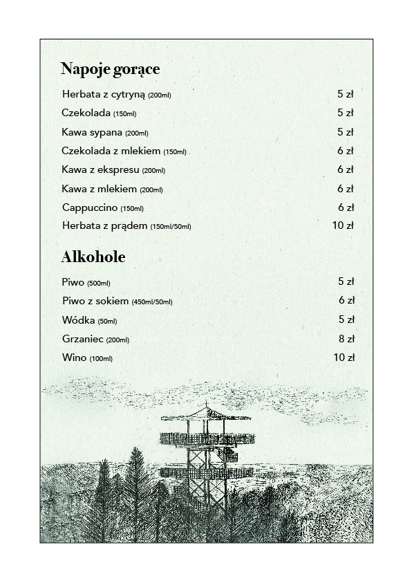
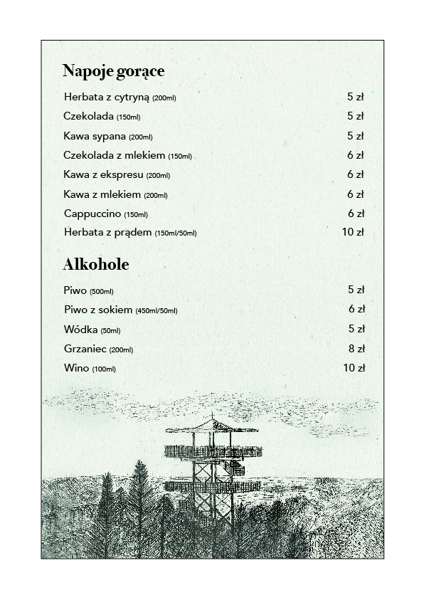

O nas
Restauracja "Pod Wieżą" w Szymbarku znajduję się w samym sercu Kaszub. Zapraszamy na wyśmienite jedzenie o każdej porze roku. Miła obsługa i niepowtarzalny klimat sprawią, że zechcecie tu powrócić. Zajmujemy się także organizacją wspaniałych imprez rodzinnych i spotkań biznesowych, oferujemy także noclegi.
Nasza restauracja istnieje od 1997 roku. Specjalizujemy się w tradycyjnej kuchni polskiej, oferujemy także kaszubskie dania regionalne. Gorąco polecamy naszego pstrąga z patelni, golonkę po szymbarsku lub placki ziemniaczane po kaszubsku.

Wieża Widokowa

Góra Wieżyca zawsze budziła żywe zainteresowanie człowieka. Nazwa góry wywodzi się z niemieckiej nazwy Turmberg (Turm - wieża). Prawdopodobnie pierwszą wieżę widokową postawiono już w 1889 roku. Dwadzieścia lat później z miejscowego kamienia i cegły zbudowano na szczycie 15-metrową wieżę widokową z tarasem na górze, która prawdopodobnie istaniała do 1920 roku. Obecnie na jej miejscu stoi krzyż.
Wieża Widokowa im. Jana Pawła II znajduję się na Szczycie Wieżyca na terenie Gminy Stężyca na Pojezierzu Kaszuskim. Szczyt wznosi się 328,6 m n.p.m i jest najwyższym z naturalnych szczytów na Niżu Polskim. Wierzchołek porośniety jest 150-letnim lasem bukowym. Przez Szczyt prowadzi turystyczny Szlak Wzgórz Szymbarskich.W 1997 roku Gmina Stężyca oddała do użytku metalową konstrukcje wieży widokowej im. Jana Pawła II, z której rozpościera się wspaniały widok na Wzgórza Szymarskie i okolice. Szczyt Wieżyca to miejsce, które jest licznie odwiedzane przez tłumy turystów o każdej porze roku.

Menu
 

Kontakt
Restauracja "Pod Wieżą"
ul. Długa 15, 83-315 Szymbark
tel. (58) 684-38-25
e-mail: fthremus@interia.pl
Zapraszamy codziennie od 11:00 - 18:00